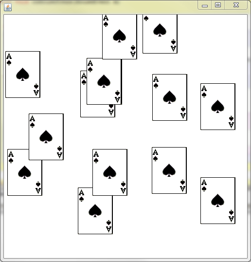

Previously you wrote a program named RandSquare, which drew 2000 random squares with random colors. One issue that occurs is that when you resize the window, it repaints the canvas, meaning that 2000 new random squares are drawn. While this is a fun side effect, you might not want to randomize so much.
Old strategy:
Every time the canvas paints itself, 2000 new squares are drawn.
New strategy:
Create a Picture with 2000 random squares in the beginning. Every time the
canvas paints itself, it just draws that Picture. This way it can't
re-randomize.
Create a new class named ImprovedRandSquare and copy the following into it:
import sacco.*;
import sacco.gui.*;
public class ImprovedRandSquare extends SCanvas
{
private Picture bgPic;
private PaintBrush bgBrush;
public ImprovedRandSquare()
{
//code goes here
}
@Override
public void paintCanvas(PaintBrush brush)
{
brush.drawPicture(bgPic,0,0);
}
public static void main()
{
SFrame frame = new SFrame();
frame.add(new ImprovedRandSquare());
frame.setSize(500,500);
frame.setVisible(true);
}
}
Notice that there are two instance fields: a Picture and a PaintBrush. If you look at the paintCanvas method you'll see that all it does is paint the background picture to the window. Our job is going to be to make it so that the Picture has 2000 random squares on it.
We've never had an image that wasn't loaded from the hard drive before, but it's relatively simple. To create a blank Picture, you simply construct it using a width and a height. Go to the constructor (where it says 'code goes here') and add the following:
bgPic = new Picture(500,500);
This constructs a blank 500x500 Picture and puts it into the bgPic variable.
How do we make it not blank?
When we draw, we need to have a PaintBrush object to work with. Lucky for us, every Picture has a built in PaintBrush object. Still in the constructor, but after you create the new Picture, add the following:
bgBrush = bgPic.getBrush();
This extracts a PaintBrush object from the background image that you've just created. Anything that you paint using bgBrush will be drawn on the Picture. Loop 2000 times and paint the rectangles like before, except using the bgBrush variable. This should all be done in the constructor. We only need to loop one time to set up the picture that will be drawn.
When you've finished, run the program and resize the window. This time, since the paintCanvas method is doing nothing but drawing an image, the re-randomization will not occur like it did before. You will notice that it cuts off right at 500x500. This is because the original Picture was exactly 500x500. If we wanted to we could make it larger, allowing the rectangles to be drawn outside the boundary of the window.
Assignment:
Stamper: Create a program that uses a blank Picture as the background. Every time that you click the mouse, that background image should be 'stamped' with a small, appropriate picture of your choice. You may also do a shape design if you want, but it must be more complicated than a simple square or circle. Make sure that you do some simple math to make sure that the center of the image appears where you clicked the moust.
You will need to override the onMousePress(MouseEvent m) method. When the mouse is pressed it will draw the stamp onto the background picture. Your paintCanvas method will only draw the background Picture; exactly as it was in the demo. If you're not creative, you may use the Ace below:

Here's one that uses a for loop and PaintBrush's drawAngledLine method:

Smearer:
The SquareSmear program also uses a background image. When the user drags the mouse across the screen, randomly colored squares or circles are painted to the background. This causes a smearing effect.


Strategy: It will become important that you know when the mouse is being pressed. To accomplish this you will need to use a combination of the onMousePress and onMouseRelease methods. Start by adding a boolean as an instance field. The purpose of this boolean will be to represent if the mouse is pressed or not. true will mean that the mouse is currently being pressed, while false will indicate that it isn't pressed.
Override the onMousePress method. The only thing that this method has to do is set the boolean to true. Similarly, override the onMouseRelease method but this time it will set the boolean back to false. This works because once you press the moues button down, it is considered 'held' until the button is released.
Now that you have a boolean that will always represent whether or not the mouse button is being pressed, override the onMouseMove method. Use an if statement to check the boolean and see if the mouse is being pressed. If it is, draw a randomly colored square or circle centered at the x and y of the mouse.